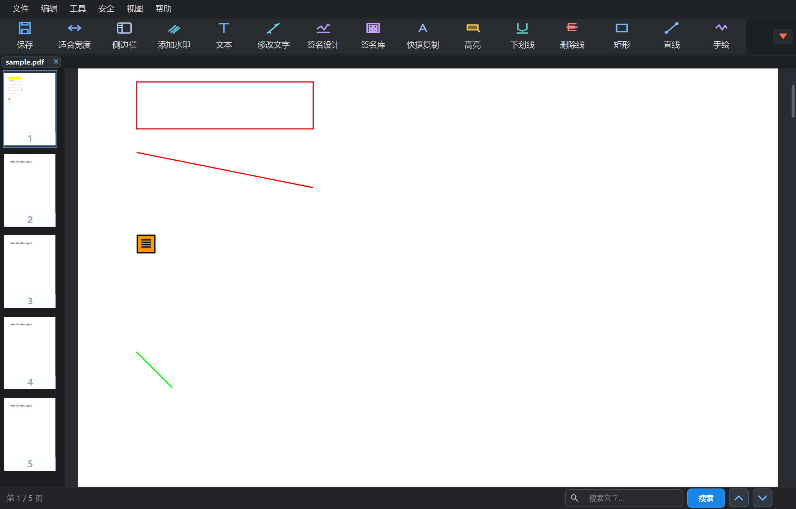

01
阅读与整理
连续滚动、多标签页、适合宽度、缩略图侧栏和页面拖动排序，让长文档始终易于掌控。
- PDF / Word
- 页面管理
- 多标签

功能有序排布，内容始终是视觉中心。浅色与深色界面可在下方直接切换查看。
把高频 PDF 工作整合成三个清晰环节，减少来回切换。
连续滚动、多标签页、适合宽度、缩略图侧栏和页面拖动排序，让长文档始终易于掌控。
添加和修改文字、插入图片、快捷复制，并通过高亮、线条、图形、签名与批注完成审阅。
识别当前页或全部扫描页面，并通过密码、权限控制和文字水印保护最终文档。
不隐藏关键功能，也不过度堆叠工具。常用操作近在手边，文档区域保持宽阔。
直接读取 PDF 与 Word 文档，多标签并行处理。
编辑、识别、批注和签名均在当前工作区完成。
保存、加密并设置权限，安全输出最终文件。
适用于 Windows 10 / 11，支持中文与 English。